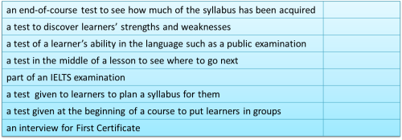
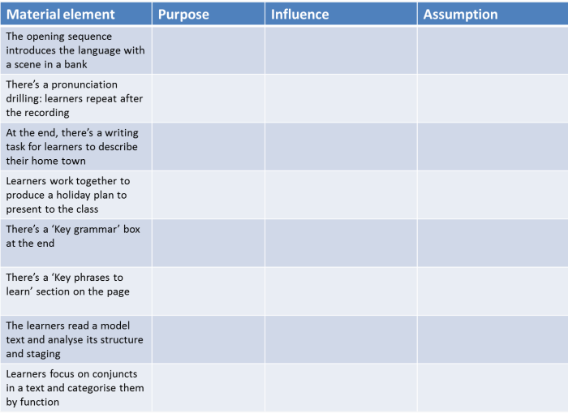

Delta Module One, Paper 2: Task by task

Nearly all the materials and guides on this site will be useful in
preparing you for the demands of the Delta examination. In
particular, those that deal with language analysis rather than
methodology will be of the most help.
What follows is a brief overview with some examples of what to expect
and what to do.
A little more advice from the examiners is set out in
the guide to what to avoid in Module One.
All links on this page except to the tests open in a new tab so
simply shut the page to come back here.
All the tasks in Paper 2 require longer written responses.
Marking
Paper two carries half the 200 marks available to you. The
apportioning is not equal, however:
| Task 1: 18 marks |
Task 2: 42 marks |
Task 3: 40 marks |
That means that Task 1 is worth less than half the marks awarded to
either Task 2 or 3.
Given that you are allowed only 90 minutes for each paper, it makes
sense to
allocate the time you spend in the same manner.
In what follows, this information is repeated with a suggested time
allocation.
|
|
|
|
In this task you will be presented with a test or an extract
from one and be asked to comment on it in terms of its effectiveness
for the stated use.
Note for the stated use in that line. You are
not being
asked to evaluate it generally but in terms of what it is
intended to do. A perfectly acceptable test of, say, the
ability to write an email to a friend will be useless if it is
actually spoken accuracy that you want to test. Obviously,
the first place to go to prepare yourself for this question is
the guide to testing,
assessment and evaluation on this site.
You are expected to make a total of 6 points including
both positive and negative ones.
This question carries 18% of the possible marks so spend no more
than 15 minutes on it. Less if you can.
Marking:
2 marks for each positive / negative comment
1 mark for each application to the learner(s) |
 |
Avoid these:
- making more than six points – number your points
so you know when to stop
- neglecting to mention both positive and negative
aspects – read the rubric
- not making it clear which are positive and which
are negative points – the marker will not guess
what you mean
- repeating yourself
- using too narrow a range of criteria – consider:
test type
language content
skills content
topics
task types
level
instructions / rubric
- neglecting to identify the test type – stating
the test type will help you use the terminology
- not referring to the situation and making it
relevant to your answer
- ignoring the particular learner for whom the
test is intended
|
Preparing for
Task 1
There are, obviously, very many
possible test types but they fall into a number of categories in
terms of their effectiveness and purposes. So:
- Figure out from the description of the test's purpose
what kind of test it is. Try completing this table by
filling in the right-hand column with the kind of test and
then click on it for the answers.

- Go to the guide to
the guide to
testing, assessment and evaluation to refresh your
memory of testing if you haven't done that recently.
There are also guides in the in-service section on assessing
the four skills discretely which all have examples of tests
with comments on their suitability for the target purposes.
Now try these three mini-tests to
check your understanding. The final test gives you the
option to come back here.
- Now find a selection of tests (teacher's books have
plenty but you could also look at any that you have
designed) and apply the principles of testing to them.
For example:
- If the test is intended to
be an achievement test (measuring progress) does it actually
test what is in the syllabus (content validity)?
- If the test is intended to test
writing skills does it do so by actually testing them
directly or indirectly? If it is indirect testing, is
it reliable and valid?
- Does the test rely on the subjective
opinion of the marker (low reliability) or is it
mechanically marked (high reliability)?
- If the test has high reliability
(multiple choice, fixed answers etc.) does it have validity:
is it testing what we think it's testing?
- Think about the learner. You need to apply what
you know about testing to the stated learner for the
stated purpose. This question is not an
opportunity for you to tell the examiner everything you have
learned about testing.
|
|
|
In this task, you are given an extract from a coursebook.
Your mission is:
- to work out what the purpose of the activities and
stages in the material are
- how they combine
- to figure out what the author(s) believe. In other
words, what the assumptions about language and learning are
that underlie the design of the material
Read the rubric carefully because you will sometimes be
directed to areas of the material to ignore or which are not
relevant.
This question carries 42% of the possible marks so spend 35
minutes on it. But less if you can.
Marking:
2 marks for each purpose you identify (up to a maximum of 12
marks, so stop at 6 ideas)
2 marks each for stating the way the exercises combine (up to a
maximum of 12 marks, so stop at 6 ideas)
1 mark for each assumption you identify (up to 6 marks)
1 mark for each explanation of the assumption (up to 6 marks)
1 mark for each relevant exercise you refer to (up to 6 marks)
Note that only the first 6 assumptions you
identify will be marked so stop at 6.
|
|
|
Avoid these:
- being disorderly – set your answer out
carefully: Purposes – Combinations – Assumption(s)
- supplying too much – number your answers so you
know when to stop
- repeating yourself
- providing more than one purpose for each
exercise – you may see more than one but will get no
credit for the second
- simply stating that the purpose is to prepare
the learners for the next exercise – they all do
that
- describing what the learners have to do rather
than stating the purpose
- discussing exercises you are not asked to
discuss – read the rubric
|
Preparing for task 2
You can prepare yourself by browsing various course materials
and asking some simple questions:
- What is the purpose of the task, activity or procedure?
- What theories have influenced its design?
- What assumptions underlie those theories?
When you have answers to those three questions, read the
introduction to the Teacher's Book. This is where the
materials writer(s) will usually set out the underlying
assumptions about learning and language that influenced the
construction of the materials.
For this task, you need to revise and (re-)visit the following
guides on this site:
-
methodology unpacked and refined – this is an overview
which attempts to link theories, hypotheses, procedures,
techniques and classroom solutions
-
syllabus design – to understand what sort of
syllabus the material might be part of (lexical, structural,
functional, task-based, mixed etc.)
-
the history and development of ELT – to remind
yourself of things like grammar-translation, direct method,
audio-lingualism, behaviourism and structural linguistics
and see if these theories and approaches are influencing the
design of the materials and whether the tasks and
presentation depend on inductive or deductive learning.
Is there, e.g., an element of discovery learning indicating
inductive approaches?
-
communicative language teaching – to see if (as is
probable) there is an underlying assumption that language is
a means of communication first and foremost and learners
need to have the opportunity to personalise language for
real communication
-
Krashen and the Natural Approach – to see if any
of his 5 hypotheses are being considered
-
task-based learning – to see if there are elements of
this approach in the materials
Try completing this table to see what might come from all
this. Click on it when you have an answer.
 |
|
|
|
In this task you get an extract or two from something such as a
methodology or resource book, a lesson plan, a discussion of a
lesson or tutor feedback.
Your task is to answer a series of questions about it based on
your knowledge of approaches, methods, theories, resources and
roles.
As you can understand, exactly what knowledge you bring to the
task will depend on its type but you should not neglect to
include reference to your own experience and that of your
colleagues when it is appropriate.
This question carries 40% of the possible marks so spend 35
minutes on it. But less if you can.
Marking:
2 marks for each correct point made (up to a maximum of 30
marks) plus
You get a mark out of 5 for the depth of your response and that
mark is then doubled to bring it up to a maximum of 10 marks.
This bit is judged as follows, according to Cambridge:
| 5 |
A fully developed,
well-balanced response to the task.
Points are
consistently supported by rationale based on relevant
reference to experience; and/or examples; and/or range
of contexts; and/or sources; and/or theories.
Rationale is convincing and insightful in justifying
points made. |
| 4 |
A well-developed, well-balanced
response to the task.
Points are mostly supported
by rationale based on relevant reference to experience;
and/or examples; and/or range of contexts; and/or
sources; and/or theories.
Rationale is mostly convincing and insightful in
justifying points made. |
| 3 |
A generally well-developed
response to the task.
Points are generally supported by rationale based on
relevant reference to experience; and/or examples;
and/or range of contexts; and/or sources; and/or
theories. Some points may be less well supported; a few
irrelevancies may be present.
Rationale is satisfactory in justifying points made. |
| 2 |
A limited response to the task.
Points are sometimes supported by rationale based on
relevant reference to experience; and/or examples;
and/or range of contexts; and/or sources; and/or
theories. Some points may be unsupported; a number of
irrelevancies may be present; the response may contain
more description than analysis.
Rationale is evident, but inconsistent in justifying
points made. |
| 1 |
A minimal response to the task.
Points are minimally supported by rationale based on
relevant reference to experience; and/or examples;
and/or range of contexts; and/or sources; and/or
theories. Most points are unsupported; a number of
irrelevancies may be present; the response contains a
lot of description and very little analysis.
Rationale is minimal. |
| 0 |
No development of the response. |
Much of that is rather subjective but the gist is that to score
well you have to identify what is relevant. You need to
refer to:
- Your experience or examples
- A range of contexts
- Your knowledge of theory and practice
and you have convincingly to justify your comments and opinions.
It is, of course, very difficult to predict the topic of this
task but question setters are constrained to some extent by the
need to be inclusive and not advantage people with particular
experiences and backgrounds so you are unlikely to be faced with
anything we could call a niche area.
Often, questions focus on the value (perceived
or otherwise) of particular approaches to teaching and classroom
techniques such as the values of correction, group work,
speaking practice, noticing activities, certain ways to
structure lessons, drilling, dictation and so on.
All of these examples, to which you could add, have both
advantages and disadvantages. They all, too, betray
something about people's understanding of the role of language
and language-learning theories.
These are the areas on which to focus.
|
|
|
Avoid these:
- not reading the rubric carefully and including
irrelevance
- not making enough points – you need 15 to secure
the maximum marks
- making too many points – anything in excess of
15 will probably be ignored and you won't have time
or space to develop your comments effectively
- not developing the points by referring to
methodology and theory
- not allowing yourself enough time to address the
whole task
|
Preparing for Task 3
All the guides listed under 2.2 above will be helpful here
but you may also like to include:
-
the teaching guides
on lexis, word formation, genre, multi-word verbs, noticing,
activity types, teacher roles etc.
-
the skills teaching guides to reading, listening,
speaking and writing
|